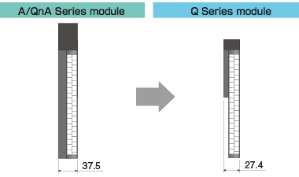
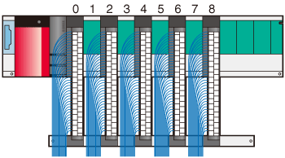
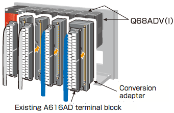

Programmable Controllers MELSEC-A Series Renewal

Replace the system to Q Series while utilizing the existing wiring
A/Q Upgrade Tool Products
Supported series: 
Replace A/QnA Series system with Q Series system without extensive I/O rewiring
Upgrade tool products
The upgrade tool products consists of three components: a conversion adapter, which modifies the existing wiring of the A/QnA Series input/output/analog/high-speed counter modules to correspond to the Q Series modules; a conversion adapter support flange, which supports the conversion adapters from the bottom, and a base adapter, which allows the Q Series base unit to be installed using the installation holes of the A/QnA Series base unit. (The upgrade tool products does not include the Q Series base unit. Please prepare it separately.)
- Remove the large type A/QnA Series programmable controllers along with the base unit, install the base adapter in the same position, and install Q Series modules. (New installation holes are unnecessary when installing the base adapter)
- Attach the conversion adapters to the Q Series modules.
- Remove the terminal blocks from the existing large type A/QnA Series modules and attach them to the conversion adapters. (The existing wiring can be used without modification.)
- Time and wire saving devices may be used for an I/O module that is not available in the Q Series.
Time and wire saving devices
Time and wire saving devices are useful for system configuration with the Q Series modules. Connector/terminal conversion modules, digital signal converters (terminal modules), and positioning module cables are available. When it is difficult to replace modules due to their specifications, utilizing time and wire saving devices makes it easier to replace the modules.
Compatibility of Q Series large base unit and Base Adapter/Conversion Adapter
| Item | Q Series large type base unit*1 | Base adapter/ conversion adapter*2 |
||
|---|---|---|---|---|
| Slot width of base unit*3 | Same width as the A/QnA Series base unit (37.5 mm) | Same width as Q Series base unit (27.4 mm)*3 | ||
| Installable module |
Power supply module | Q Series power supply module | ○ | ○ |
| CPU module |
CPU module | × | ○ | |
| Universal model QCPU | ○*4 | ○ | ||
| ・I/O module ・Intelligent function module |
Q Series large type I/O modules*5 | ○ | × | |
| Q Series module (occupies 1 slot) | ○*6 | ○ | ||
| Q Series module (occupies 2 slots) | × | ○ | ||
| Conversion adapter*7 | For terminal block type 16-point I/O module (occupies 1 slot) | ○*6 | ○ | |
| For terminal block type 32-point I/O module (occupies 1 slot) | ○*6 | △*9 | ||
| For terminal block type 32-point I/O module (occupies 2 slots) | × | △*10 | ||
| For high-speed counter module | ○*6 | △*9 | ||
| For high-speed counter module | ○*6 | △*9 | ||
| For analog module (occupies 2 slot) | × | △*10 | ||
| Connection of Q/QA/QA1S extension base unit*8 | ○ | ○ | ||
○: Applicable (installable) △: Applicable with restrictions (installable) ×: Not Applicable (Not installable)
- *1.The Q Series large type base units can be used with the Q Series base units.
- *2.The base adapter manufactured by Mitsubishi Electric Engineering Co., Ltd. is to be installed to the Q Series base unit.
- *3.Check the installation conditions before using the upgrade tool products, because wiring space is reduced due to a decrease in the module's width.

- *4.Q00UJCPU is not compatible.
- *5.The common terminal arrangement and electrical specifications are same as that of large type A Series I/O module.
- *6.The Q Series large type blank cover (QG69L) is required.
Some modules are not compatible. (Some exceeds 98 mm height.) For details, please refer to the Q Series Large Type Blank Cover User's Manual (IB-0800408). - *7.Since the conversion adapters are to be installed onto the Q Series modules, the specifications and functions are same as that of the Q Series modules. (Please check the transition handbook, since the specifications and functions are different from that of large type A Series module)
- *8.Universal model QCPUsNote (include High-speed Universal model QCPUs) can be connected to the QA/QA1S extension base unit.
- *9.If the size of cable connected to the terminal block is larger than 1.25 mm2, ERNT-AQTX41, AQTY41, AQTX81, AQTY81, AQT68AD, AQT68ADN, AQT68DA, and AQTD61 modules may have a difficulty in installation.
In this case, secure wiring space by leaving empty slots in between modules. For example, install modules on slot No. 0, 2, 4, 6, 8, and leave slot No. 1, 3, 5, 7 empty. If the number of slots is insufficient, consider using the Q Series large type base unit. - *10.When using two Q Series modules with the existing wiring terminals using conversion adapters. For example, when replacing an A616AD module with two Q68ADV(I) modules.

Note:The Universal model QCPUs, whose first 5-digit serial number is 13102 or later, are compatible with the base units.